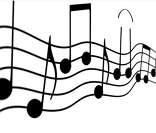
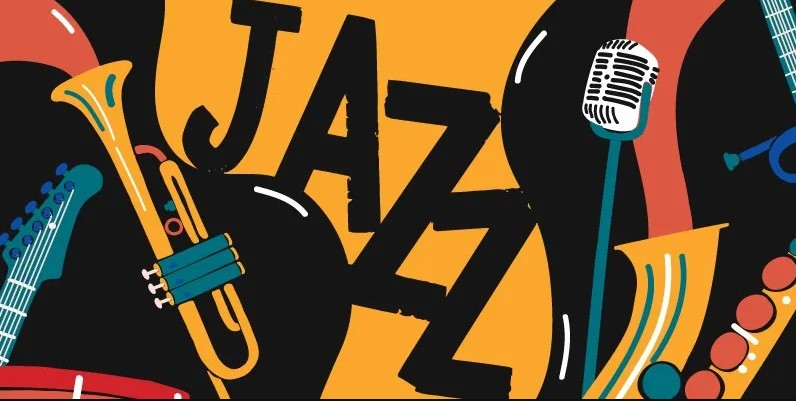

::::::::::::::::::::::::::::::::DIAL:::::::::::::::::::::::::::
Lista dos principais gêneros musicais existentes na atualidade, relação com o nome dos gêneros da música brasileira e internacional e exemplos de estilos.
Qual a sua preferencia ?
Com o Site DIAL de Descoberta de Musica vc não tera mais duvidas
.....................PESQUISE SEU ESTILO MUSICAL...................................

Principais gêneros musicais nacionais e internacionais:
Afropop
- Ambient Music (Música Ambiente)
- Axé música
- Baião
- Blues
- Bluegrass
- Bossa nova
- Brega
- Calipso
- Coco
- Country
- Choro
- Cumbia
- Dance Music
- Death Metal
- Disco
- Forró
- Jazz
- Flamenco
- Folk
- Frevo
- Funk
- Grunge
- Heavy Metal
- Hip Hop
- Indie
- Jovem guarda
- Latin
- Lundu
- Mangue beat
- Maracatu
- Marcha-rancho
- Marchinha
- Maxixe
- Mod
- Modinha
- MPB (Música Popular Brasileira)
- Música Alternativa
- Música caipira
- Música Clássica
- Música Eletrônica
- Música Gospel (evangélica)
- Música Romântica
- New Age
- Ópera
- Pagode
- Partido-alto
- Polca
- Pop
- Punk
- Punk Rock
- Quadrilha
- Rap
- Reggae
- Repente
- Rock and Roll
- Rumba
- Salsa
- Samba
- Samba de breque
- Samba-canção
- Samba-enredo
- Samba rock
- Ska
- Sertanejo Universitário
- Soundtrack
- Soul brasileiro
- Tango
- Tropicalismo
- Valsa
- Vanguarda
- World Music
- Zouk
Veja também:
• História do Rock
• Músicas de Festa Junina
• Músicas de Natal - Canções Natalinas
• Músicas do Folclore Brasileiro
• MPB - Música Popular Brasileira
Rock: um dos gêneros musicais mais populares no mundo ocidental. A guitarra é o instrumento central das bandas de rock

Jazz: gênero musical que surgiu nos Estados Unidos no final do século XIX e início do século XX |
Disco: disco music é um ritmo que nasceu entre os anos 1960 e 1970, em discotecas nas cidades americanas de Nova York, Chicago e Filadélfia |
Veja também:
• História do Rock
• Músicas de Festa Junina
• Músicas de Natal - Canções Natalinas
• Músicas do Folclore Brasileiro
• MPB - Música Popular Brasileira